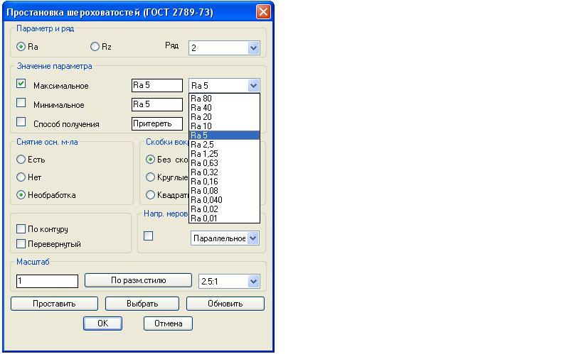
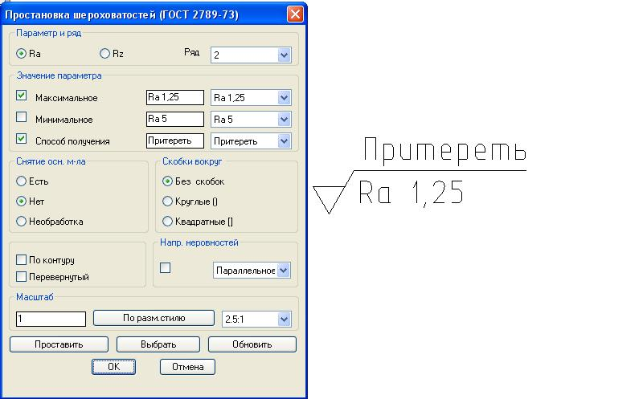

Простановка шероховатостей(ROU)
(ГОСТ 2789-73)
В командной строке вводим текст «ROU», далее «Ввод».
Открывается диалоговое окно в котором выбираем необходимые параметры.

Параметры и
ряд — позволяет выбирать параметр шероховатости Ra или Rz,так же ряд с 1 по 4.
Используем ряд 2.
Значение параметра
При указании наибольшего параметра шероховатости, необходимо выбрать «Максимальное» (установить галочку перед текстом «минимальное») и из предложенного списка выбрать необходимый параметр шероховатости, при этом параметр шероховатости будет без предельных отклонений.
При указании наименьшего параметра шероховатости, необходимо выбрать «Наименьший» (установить галочку перед текстом «максимальное»), при этом будет проставлен знак шероховатости без обозначения параметра шероховатости. Обозначение нужно будет внести отдельно однострочным текстом с учетом выбранного масштаба (размерного стиля). Например Ra 2,5 min.
При указании способа получения шероховатости, необходимо дополнительно поставить галочку перед текстом «способ получения» и выбрать из предложенного списка видов обработки необходимый.
Снятие основного материала — позволяет задать, при обычной обработке материала с выбранной шероховатостью «Есть», при обработке без снятия материала в сочетании с параметром «Способ получения» - «Нет»

Скобки
вокруг — позволяет поставить знак шероховатости в скобках
При необходимости простановки обработки материала по какому либо замкнутому контуру — ставим галочку «По контуру».
При необходимости простановки знака шероховатости под размерной линией (например в обозначениях сварных швов), ставим галочку - «Перевернутый». Данная опция — не используется.
Направление неровностей — позволяет указать условное обозначение направления неровностей обработки. Условные обозначения должны соответствовать приведенным в таблице ГОСТ 2.309-73. При необходимости условные обозначения направления неровностей приводят на чертеже (штриховкой).
Масштаб — позволяет не выходя из команды простановки шероховатости изменить размерный стиль отображения шероховатости ( используется при простановке знака шероховатости на различных видах выполненных в различных размерных стилях т.е. масштабах отображения).
Клавиша «Проставить» - позволяет проставлять знак шероховатости с ранее выбранными параметрами несколько раз, пока не нажмем «ОК».
Клавиша «Выбрать» - позволяет отредактировать уже имеющуюся шероховатость (если она была выполнена при помощи команды «ROU»).
Процедура: Нажимаем «Выбрать», далее на поле чертежа указываем (лкм) шероховатость которую нужно отредактировать, далее во вновь открывшемся окне «Простановка шероховатостей» изменяем параметры на необходимые и нажимаем «Обновить». Далее «ОК».